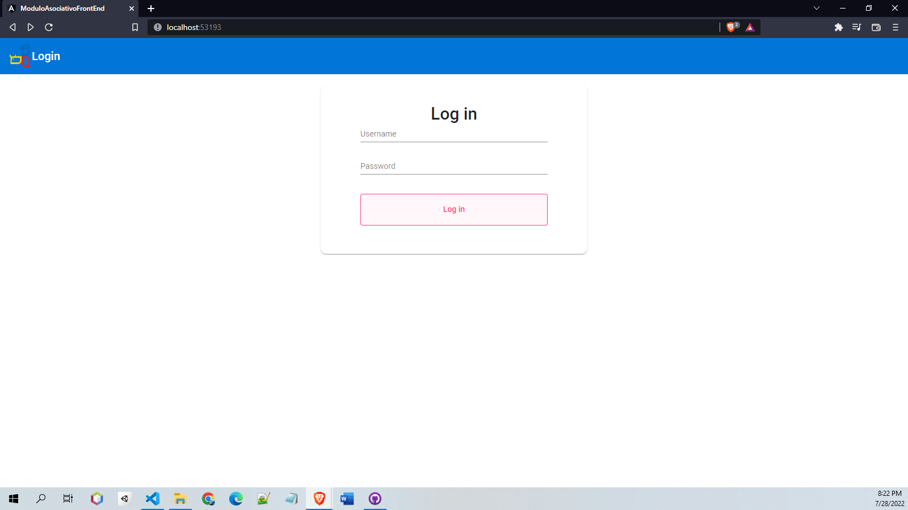
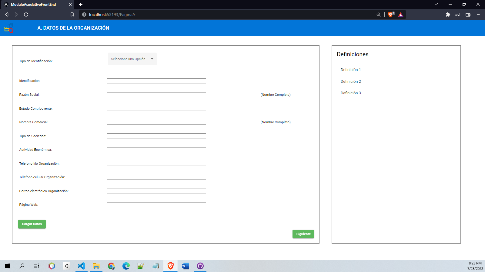
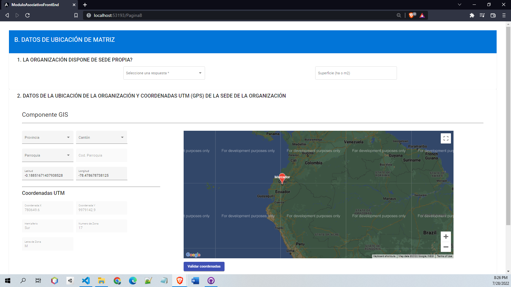
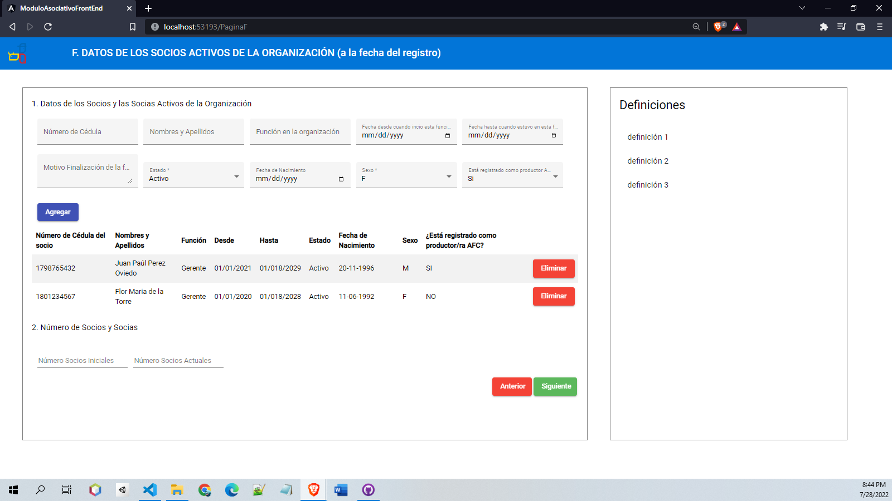
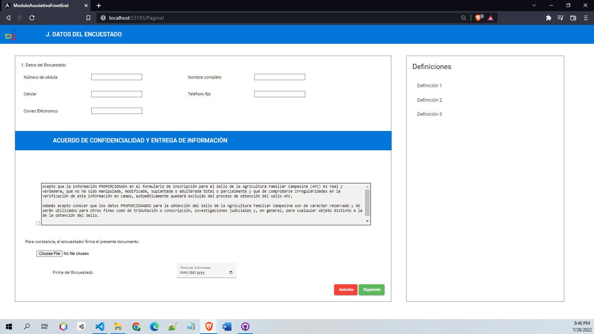

What is the project about?
The MAG project (in Spanish, Ministerio de Agricultura y Ganadería). The project is useful for farmers who need permits to carry out their functions, such as selling in the city.
The web app is filled out by a MAG employee together with a farmer, and in the end it generates a ticket for the farmer, which is necessary to carry out their activities.
In order to create this page, we needed the following tools:
- Angular
- TypeScript
- Java Spring
- Google Maps
- Microservices architecture
- Github
The web application has the following most important modules (because there are a total of thirteen):
- Login
- Organization data
- Data location matrix
- Details of the organization's partners
- Respondent data
- Observations
The login page

On this page, the user has to log in with a username and password in order to continue.
Best features:
- When the user clicks the Log In button, it uses an API with a GET method
Organization data

This page is for data organization, where the user has to fill in basic information, such as identification, business name, status, etc.
Best features:
- When the user clicks the Next (siguiente) button, it uses an API with a POST method
- If we fill in the identification and click the left green button (cargar datos), the rest of the data will be filled in automatically with an API that uses a GET method
Data location matrix

This is one of the most interesting tabs, where the user will fill in the position of the organization and business by clicking on the map, and they can also use the items on the left side: Province, Canton, Parish (Provincia, Cantón, Parroquia), etc.
Best features:
- It uses the Google Maps API
- It uses both the GET and POST methods inside the APIs
- It uses a service that has all the information for the dropdowns for Province, Canton, and Parish
Details of the organization's partners

This page is the same as the first, with the difference that here we can fill in some of the organization's partners.
Best features:
- We use the complete CRUD here: Create, Read, Update and Delete
Respondent data

This page is an agreement, where the user has to agree or disagree with the terms.
Best features:
- Here we have an PDF uploader
- The API method in this case is a POST
Observations

This is a very interesting page as well and it is the final one.
First, we fill in an observation, and when we click the finish (finalizar) button, it generates a PDF with the previous information.